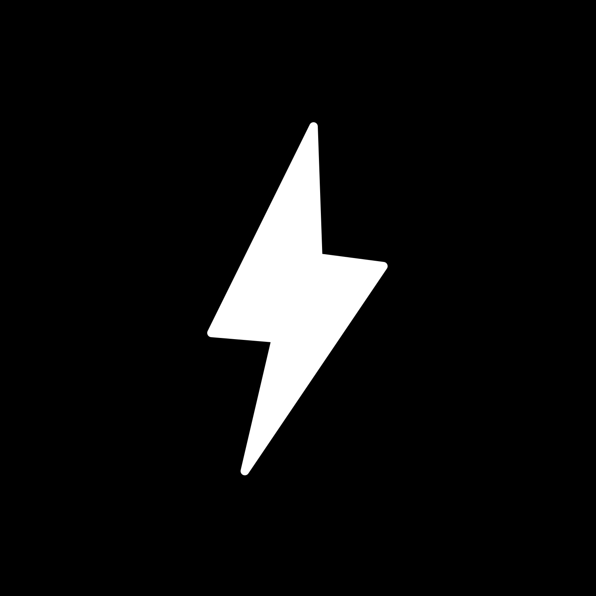
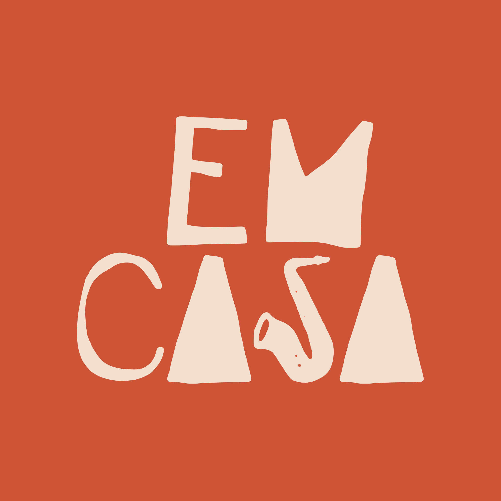
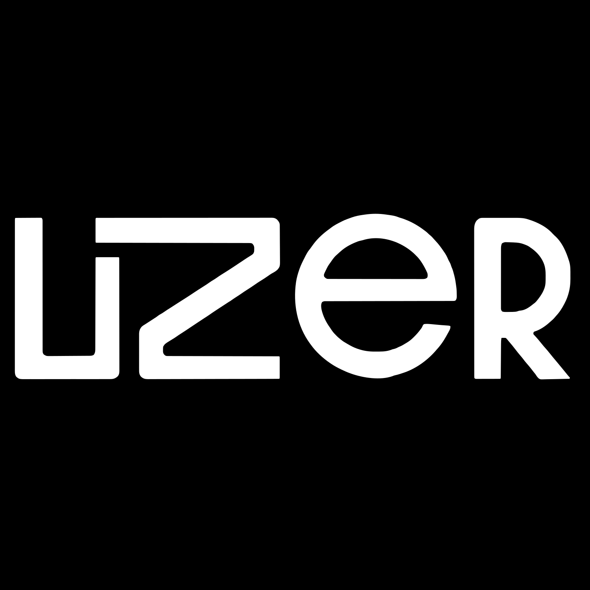
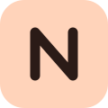

We build software
and advise
founders, enterprises and executive teams.
BytArc is an independent, founder-led AI studio in Lisbon. We automate business processes for growing companies and build our own AI products.
What we've built and who we've advised.
Products, prototypes, and advisory work that solved real problems across operators, founders, and teams. From AI powered SaaS platforms to executive education programs, this is the BytArc legacy so far.

Product · LiveJobPilot AI
The complete AI job search Chrome extension. Discover matching jobs, autofill every application, generate cover letters, and track it all. Across 50+ ATS platforms.
- Chrome Extension
- AI
- SaaS
Maktub
Custom operations platform built for a private client. Bespoke data model, internal dashboards, tailored reporting. Details under NDA.
- Operations
- Custom
- Internal Tool
Mr Blue
Custom AI tool built for a private client. Aggregates and analyses customer feedback at scale. Details under NDA.
- AI
- Custom
- Internal Tool
TopResume.ai
AI-powered CV editor platform. Write, edit, and optimize your resume with real-time AI assistance. Modern editor with templates, sections, and instant PDF export.
- AI
- Careers
- Editor
BytArc Education
Portuguese language tutoring platform for young learners. Teacher dashboard with 12 interactive games, curriculum tracking, vocab tools, and student progress analytics.
- EdTech
- Games
- Firebase
VendasIA
AI sales toolkit for modern teams. Autonomous SDR agent that generates personalized Portuguese B2B messages at scale, plus an M&A CRM with AI-powered deal analysis.
- AI
- Sales
- B2B
MBA Coach
AI-powered MBA coaching platform. Personalized preparation for MBA applications with competitive research, market analysis, and structured guidance through the entire process.
- AI
- Education
- Coaching
LifeOrganizer
Personal life management platform. Tracks communications across WhatsApp, Gmail, and Instagram, maps relationships with frequency analysis, and keeps you balanced with smart alerts.
- Productivity
- AI
- CRM

Product · BetaEmCasa
Home concert booking platform. "Concertos em Casa". Connect music lovers with artists for intimate, private performances in residential settings across Portugal.
- Marketplace
- Music
- Events
Diário de Sono
Sleep tracking app. Log your sleep patterns, analyze habits over time, and get personalized recommendations to improve sleep quality. Beautiful, calming interface.
- Health
- Tracking
- Analytics
MemoryCleaner
Smart macOS memory optimizer. Lives in your menu bar with Tinder-style recommendation cards. Swipe to keep or kill processes, freeing up RAM instantly.
- macOS
- Utility
- Python
Browser Agent
AI browser automation agent with visible navigation and chat interface. Control a real Chromium browser with natural language, powered by GPT-4o via browser-use.
- AI
- Automation
- CLI
MindMatch
Nova-funded prototype for a mental health marketplace connecting patients with local psychologists through AI-powered matching. Designed for a Lisbon-first rollout.
- Health
- AI
- Marketplace
CasePreper
AI-powered consulting case interview preparation platform. End-to-end career support from firm research to application tracking, with an agentic assistant that executes tasks.
- AI
- Careers
- Consulting

ConsultingUzer
AI consulting for executive education. Helped the Uzer team design and deliver AI-focused executive education programs, providing resources and in-class facilitation support.
- AI
- Consulting
- Education
TaskSync
Native macOS app for running several AI coding agents in parallel. Each agent gets its own terminal, task queue and autopilot loop, with a companion VS Code extension.
- macOS
- AI Agents
- Developer Tool

Product · LiveNova SBE Alumni
Community platform for Nova SBE alumni in New York: member directory, events, jobs and mentoring, with an AI networker agent that suggests connections and drafts introductions.
- Community
- AI
- Next.js
Notes
Always-on-top floating notes for macOS with tabs and GitHub Gist sync, plus a web version and an iOS widget. A floating note can follow your voice like a teleprompter.
- macOS
- Productivity
- Electron
ALLREV.AI
Brand review aggregator. Enter a brand and it finds its stores with Gemini and Google Maps, then merges their Google reviews into one block you can filter by rating, date and keyword.
- AI
- Gemini
- Reviews
Company Brain
Investor prototype that maps how a company really works, starting from the CEO. An AI interviewer follows the reporting lines, adds workflows and platforms, and grows the operating graph.
- AI
- Prototype
- B2B
FounderOS
AI interviewer for founders. It runs a structured questionnaire in a minimal black chat and turns the answers into a PDF dossier. Access is password-protected.
- AI
- Founders
- Prototype
SpeedHealth.ai
Website for SpeedHealth.ai, a health AI consultancy: a cinematic static site built around a scroll-driven WebGL visual.
- Website
- WebGL
- Health
- AWS Activate
Meet BytArc.
BytArc is an independent AI studio in Lisbon, led by its founder. Two sides: AI consulting and process automation for growing companies, and AI products built in house. Supported by AWS Activate.
Consulting side: we work with founders and executive teams on strategy, go-to-market and operating design. Tech side: Tomás personally designs, engineers and ships products. AI platforms, SaaS tools, consumer apps.
BytArc Education is the company's Portuguese-tutoring platform for young learners. We're also building OpenClaw, an agent framework for AI business automation.
The Organization
The OpenClaw Agents Org Chart

Tomás Batalha, Founder
Tomás Batalha is the Founder of BytArc. Former Google business analyst and Amazon business development lead. Co-founded a B2B SaaS startup where he built a €147K enterprise pipeline from zero and closed 23 enterprise deals, including Fortune 500 and Big 4 firms. MSc in Strategic Management from Rotterdam School of Management, BSc in Management from Nova SBE, additional studies at the National University of Singapore. At BytArc, Tomás personally designs, builds and ships every product. 15+ shipped in under 4 months.
BytArc is a founder-led AI studio that also builds its own ventures. The company runs 11 AI agents that handle everything from strategic planning to marketing to code reviews, creating a fully autonomous AI-powered organization. Each agent has a defined role, decision authority, and escalation protocol.
Each agent has a specific role, personality, and set of tools. They communicate through structured workflows and escalation protocols. The org chart on the left shows the current team structure.
Technologies we work with
Let's build something together.
Whether you need a strategic partner, a technical cofounder, or a team that can take an idea from napkin sketch to production, BytArc is always open to the right conversation.